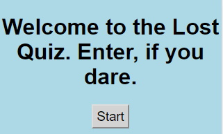

This is just a placeholder image; I'm not actually a bird
This is just a placeholder image; I'm not actually a bird
Keith Freitag
 History
History Skills and Hiring
Skills and Hiring Passions
Passions
I pivoted from high intensity and high speed sales jobs to high intensity and high speed restraunt managment jobs and I'm ready to pivot again to a high intensity and high speed coding job! Stress is a way of life!
One might be unfamiliar with how these possisions could possibly be relevant to a coding environment; but if working Sales has taught me one thing, it's how to talk to people and be personable. Managing a restraunt is all about working on a team, which is also an important aspect of any dev team.
BackLike most (very few) developers, I started coding basic html4 on neopets when I was ten years old. I've since taken a few classes on html, css, and javascript; most notably the Thinkful Engineering Immersion course, which I'm told has a 91% rate of finding a coding related job within 90 days. You wouldn't want to be in the bottom 9%, would you?
On a more serious note, I'm inexperienced but qualified; my inexperience is somewhat of an advantage as I don't have any bad coding habits and I can be molded into what you need without me having to unlearn an old style!
Back
It goes against my nature to try and sell myself, so I'm going to just be candid
and hope my sincerity serves as a replacement for strict professionalism. I'm a strongly opinionated person.
I've always thought that the so-called Golden Rule of Do onto others as you would have them do to you
is only
applicable in a meek, uninterested society. I want to be challenged, to argue, to kick and scream in the pursuit of
truth and merit, and ultimately I want nuance over broad brushstrokes.
Coding, in a way, is an outlet for me. It's a form of expression and creation that lets me experiment and develop and improve. It's challenging for me, which is what draws me to it. If it came naturally and was always easy it wouldn't be as stimulating as it is. And that stimulation and struggle is the foundation of my pitch for you to hire me. I'll struggle on your behalf, until we're both satisfied that what I've created is truly worthwhile.
My passions apart from coding include appearing on the radio to debate climate change, overanalyzing geopolitics from my bedroom, and running a dungeons and dragons campaign (second edition) that is nearing it's tenth year of life with no sign of stopping!
BackProjects
 Quiz App
Quiz App
My first project with Thinkful! A humble javascript quiz app focused on the use of render functions and event listeners.
 Bookmark App
Bookmark App
My second project with Thinkful! A humble bookmark app focused on the use of asynchronous javascript and RESTful APIs.
This was the very first proper project with the Thinkful Engineering Immersion Course. It's an App where no HTML elements are allowed; just about everything needs to be rendered. This crux of this project was to demonstrate ability with recently learned jQuery and event listeners. My quiz is on the ABC Lost television show that ran from 2004 to 2010. I adored it as a teen, but that's besides the point; there weren't any points for style or taste after all.
Github Link

Live Website Link
This is the second Thinkful EI project. This one was a fair bit tougher as there was a lot less hand holding on this one. This app allows the user to add bookmarks, edit them, rate them, and delete them. This project focused on API use and asynchronous web design. Please don't mind the hideous styling; there weren't any points for style, so don't look at it as ugly--look at it as efficient!
Back